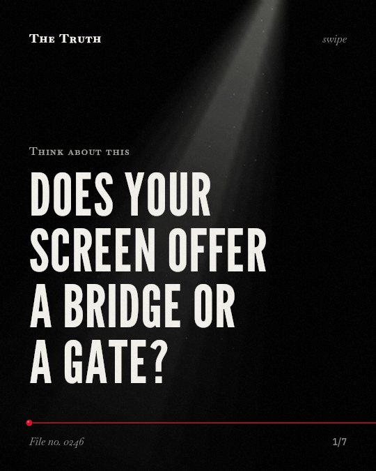

Think about this
Does your screen offer a bridge or a gate?

Digital platforms foster social capital but rely on offline resources.
While platforms enable trust-building and engagement, access is hindered by existing capital inequalities and the specific needs of marginalized groups. The evidence is mixed.
Established. Several studies combined, or official data. The evidence is mixed.
What the research found
The amount of social capital people get from online gaming depends on how many identities they have and how much those identities are marginalized in that community.
“The extent to which positive social interactions were experienced and social capital was accumulated depended on (a) the number of interacting salient identities and (b) the degree to which salient identities were marginalized in the respective gaming community.”
Systematic review, 2025. Sachan et al., Cyberpsychology Behavior and Social Networking.
Young people with particular types of disabilities require intensive, personalised and long-term support from within and beyond the family to ‘get online’.
“Our study demonstrates that young people with particular types of disabilities require intensive, personalised and long-term support from within and beyond the family to ‘get online’.”
Study, 2016. Newman et al., Information Systems Journal.
Unequal resources of capital can influence technology use and digital inclusion for young people with disabilities.
“This revealed how unequal resources of capital can influence technology use and hence digital inclusion for young people with disabilities.”
Study, 2016. Newman et al., Information Systems Journal.
The COVID-19 pandemic increased the social digital divide.
“Contact restrictions caused by the COVID-19 pandemic has accelerated the digital transformation of Public Administration in most countries and has increased the social digital divide.”
Systematic review, 2022. Morte-Nadal & Navarro, International Journal of Qualitative Methods.
Digital platforms enabled new modes of engagement and trust-building during the COVID-19 pandemic.
“However, digital platforms enabled new modes of engagement and trust-building.”
Systematic review, 2025. Fatin & Wahab, Pakistan Journal of Humanities and Social Sciences.
Access is not equal.
The social digital divide increased during the pandemic. People with disabilities require intensive, long-term support to get online. Your ability to build capital depends on your offline resources.
Your connection is a privilege.
That may be why social media feels like a shortcut to community. It is often a gate guarded by existing wealth, physical ability, and external support systems.
This part is our reading of the evidence, not a finding.
The glow of a screen in a quiet room.
You scroll through a community group at night. You feel a sense of belonging. You do not see the barriers others face to reach this same space.
The honest summary
The evidence shows that digital platforms can foster social capital, but this is heavily influenced by existing offline resources and the degree of marginalization within specific online spaces.
The sources highlight that significant barriers to digital inclusion exist, particularly for individuals with disabilities who require intensive support to access these platforms.
Who is left outside the network?
Sources
- Tushya Sachan, Dinesh Chhabra, Betina Abraham (2025). Social Capital in Online Gaming Communities: A Systematic Review Examining the Role of Virtual Identities. Cyberpsychology Behavior and Social Networking. Systematic review, cited 12 times.
- Lareen Newman, Kathryn Browne‐Yung, Parimala Raghavendra et al. (2016). Applying a critical approach to investigate barriers to digital inclusion and online social networking among young people with disabilities. Information Systems Journal. Study, cited 116 times.
- Tamara Morte-Nadal, Miguel Ángel Esteban Navarro (2022). Digital Competences for Improving Digital Inclusion in E-Government Services: A Mixed-Methods Systematic Review Protocol. International Journal of Qualitative Methods. Systematic review, cited 78 times.
- Tasnia Fatin, Sazali Abdul Wahab (2025). A Systematic Review of Social Capital and Resilience in the Post-COVID Era: Implications for Sustainability. Pakistan Journal of Humanities and Social Sciences. Systematic review, cited 1 times.
Also read for this file, not quoted
- Guraya et al. (2021). Preserving professional identities, behaviors, and values in digital professionalism using social networking sites; a systematic review.
- Huckle & Silva (2020). People of Color, People of Faith: The Effect of Social Capital and Religion on the Political Participation of Marginalized Communities.
This file was researched and drafted by software, then checked by rules a model cannot talk its way around: each quote above was matched word for word against the paper, and every number had to appear in it. How files are made.